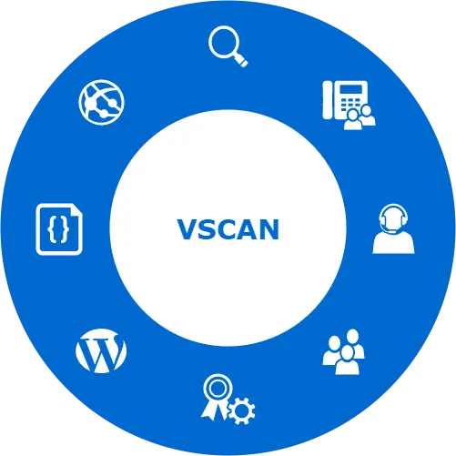

關於我們

VSCAN 為專注於檢測網站安全性的資安公司，提供網站弱點掃描與程式碼弱點掃描服務，藉由安全檢測協助調整風險漏洞，期望網站提供服務的同時，能兼顧其安全性，避免發生駭客攻擊事件導致名譽受損。
公司服務皆由具資安專長顧問進行，長年輔導企業的資安強化與檢視，從網站伺服器、網站程式碼、以及各種環境架構等方向檢視資安漏洞，並協助調整為更安全及更值得客戶信賴的網站。
如有任何問題，歡迎寄信至 service@vscan.com.tw 或是填寫下面表單，我們將盡快為您回覆！